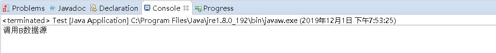

写这篇文章的目的和上一篇单例模式一样，策略模式也是一种常用的设计模式，太多的if-else不仅看着不太美观而且不好维护，对于自己来说也等于复习了一遍策略模式。先说一下策略
模式的定义：
策略模式封装了算法家族，可以让彼此之间互相替换，简单的来说就是比如之前系统调用了两个数据源，现在要添加第三个数据源如果还是使用if-else就需要给所有调用数据源的地方加上
新的判断分支，从而导致维护繁琐。如以下代码：
if(A){
System.out.println("调用A数据源");
}else if(B){
System.out.println("调用B数据源");
}如果将来随着业务变得复杂，加入C数据源，还要接着加入else if分支，以此类推工作量会越来越繁琐，而且加入了大量冗余代码。。。。
使用了策略模式之后：只需要在策略类Strategy中定义一个调用所有数据源的公共借口就可以
public abstract class Strategy {
public abstract void dataInterface();
}
DataStrategyA，封装了调用A数据源的方法，继承于Strategy
public class DataStrategyA extends Strategy {
public void dataInterface() {
System.out.println("调用A数据源");
}
}DataStrategyB，封装了调用B数据源的方法，继承于Strategy
public class DataStrategyB extends Strategy {
public void dataInterface() {
System.out.println("调用B数据源");
}
}Context算法调用类，根据具体策略对象调用相应的方法
public class Context {
private Strategy strategy;
public Context(Strategy strategy) {
this.strategy = strategy;
}
public void contextInterface() {
strategy.dataInterface();
}
}运行效果如下：
public class Test {
public static void main(String[] args) {
Context context = new Context(new DataStrategyB());
context.contextInterface();
}
}
这样就解决了繁琐的if-else操作了，就算以后加入C、D数据源也只需要增加两个策略类就可以了
此外，策略模式还有一个优点就是简化了单元测试，每个方法都有自己独立的类，可以通过自己的接口进行单独测试
当然策略模式也存在着缺点，就是增加了大量的策略类，要求每个开发人员都要了解。策略模式的优点、缺点都说完了怎么样取舍就看大家自己了。不过还是建议大家
使用策略模式。阿里巴巴的java开发手册中也明确表示了if层数超过三层的时候要使用策略模式，